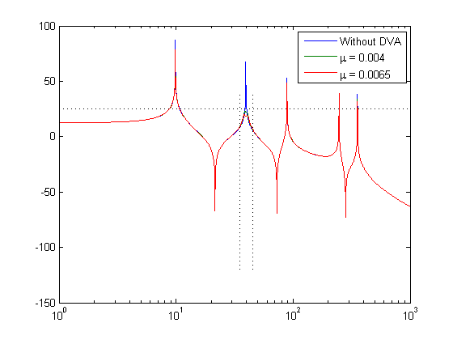
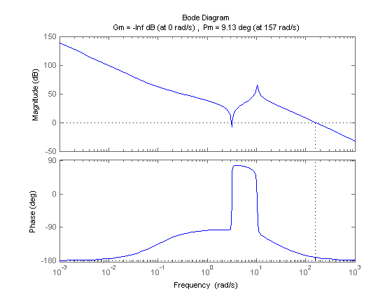
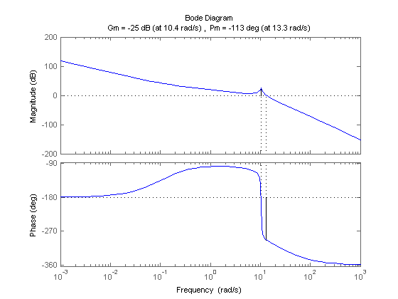

Contents
MAE 6258 Schur_HW6
clear
close all
n_modes = 6;
DVA_mode = 2;
L = 1;
rhoA = 1;
EI = 1;
lamda = pi*(1:n_modes)';
w_n = lamda.^2*sqrt(EI/(rhoA*L^4));
w_a = w_n(2);
zeta = 0.00*ones(size(w_n));
mode_fn ='ms_pinned_pinned';
x_f = L/10;
phi_x_f = feval(mode_fn,x_f,1:n_modes,rhoA,L);
x_a = L/4;
p = 1;
phi_x_a = feval(mode_fn,x_a,1:n_modes,rhoA,L);
zeta_a = 0.05;
w_a = p*w_n(DVA_mode);
wmin = 0.1*w_n(1);
wmax = 10*w_n(end);
w = logspace(log10(wmin),log10(wmax),10001);
G = zeros(1,length(w));
x = L/4;
phi_x = feval(mode_fn,x,1:n_modes,rhoA,L);
for k = 1:n_modes
Gtilde = 1./(w_n(k)^2-w.^2+(1i*2*zeta(k)*w_n(k))*w);
G = G + (phi_x_f(k)*phi_x(k))*Gtilde;
end
str = {'Without DVA'};
ampl = 10^(25/20);
r1 = 35/w_a;
r2 = 45/w_a;
fn1 = @(mu1) r1 - (p^2 - r1^2)/abs((1-r1^2)*(p^2-r1^2) -mu1*p^2*r1^2);
mu = [.004 .0065 ];
G_DVA = zeros(length(mu),length(w));
for i = 1:length(mu)
m_a = mu(i)/phi_x_a(DVA_mode)^2
k_a = m_a*w_a^2
c_a = 2*zeta_a*m_a*w_a
H = (m_a*(c_a*w.^3+k_a*w.^2))./(-m_a*w.^2+1i*c_a*w+k_a);
num = zeros(1,length(w));
den = zeros(1,length(w));
for k = 1:n_modes
Gtilde = 1./(w_n(k)^2 - w.^2+(1i*2*zeta(k)*w_n(k))*w);
num = num + phi_x_f(k)*phi_x_a(k)*Gtilde;
den = den + phi_x_a(k)^2*Gtilde;
end
Wxa_F = num./(1-H.*den);
for k = 1:n_modes
Gtilde = 1./(w_n(k)^2-w.^2+(1i*2*zeta(k)*w_n(k))*w);
G_DVA(i,:) = G_DVA(i,:) + H.*Wxa_F.*(phi_x_a(k)*phi_x(k)*Gtilde)+(phi_x_f(k)*phi_x(k))*Gtilde;
end
str{i+1} = sprintf('\\mu = %g',mu(i));
end
d_st = phi_x_a(DVA_mode)*phi_x(DVA_mode)/w_n(DVA_mode)^2;
G = G/d_st;
G_DVA = G_DVA/d_st;
figure;
semilogx(w,20*log10(abs(G)),w,20*log10(abs(G_DVA)));
legend(str{:});
set(gca,'XLim',[1e0 1e3]);
hold on
x = linspace(-120, 40, 100);
y1 = repmat(35, size(x));
y2 = repmat(45, size(x));
semilogx(y1, x, 'k:', y2, x, 'k:')
y3 = repmat(25, size(w));
semilogx(w, y3, 'k:')
m_a =
0.0020
k_a =
3.1171
c_a =
0.0079
m_a =
0.0032
k_a =
5.0653
c_a =
0.0128

Problem 2
clear
close all
alpha = 0.004;
T=10;
m1 = 1;
m2 = .1;
c=.004;
k=1;
w2 = sqrt(k/m2);
zeta = c/(2*m2*w2);
mu = m2/m1;
s = tf('s');
G1 = 1/m2*(s^2+2*zeta*w2*s+w2^2)/((mu*s^2+2*zeta*w2*s+w2^2)*(s^2+2*zeta*w2*s+w2^2)-(2*zeta*w2*s+w2^2)^2);
K = tf([T 1], [T*alpha 1]);
G2 = (1/m2)/((mu*s^2+2*zeta*w2*s+w2^2)*(s^2+2*zeta*w2*s+w2^2)-(2*zeta*w2*s+w2^2)^2);
margin(G1*K)
figure
margin(G2*K)
 